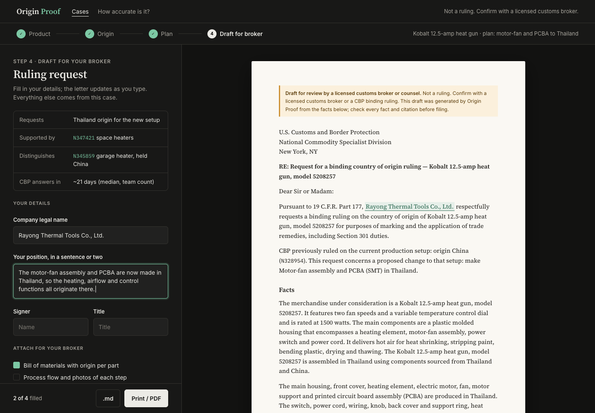
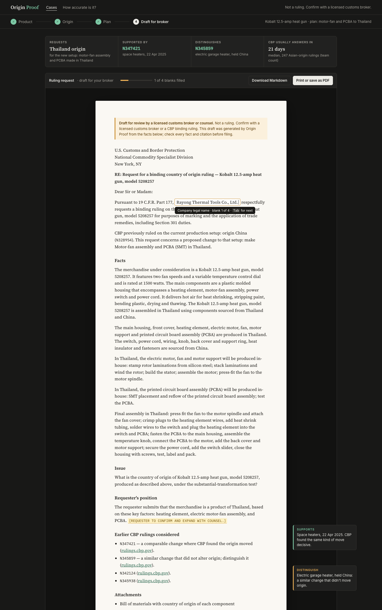

The first version left the page bare and kept the blanks in a separate list. Both versions below put the case context on screen and fill the blanks where they are. The letter is the backend's real export for the recorded heat-gun plan; the company name and position text are example user input.
After Revolut Business (dark form, light document), Mercury and Acctual invoices: a short form on the left fills the letter on the right as you type. The case context sits at the top of the form.

After Cake Equity and Workable templates (fields inside the text) and margin comments: four context tiles above, a slim toolbar with progress, and the blanks typed straight into the letter. Tab jumps to the next blank. Cited rulings get margin notes.
